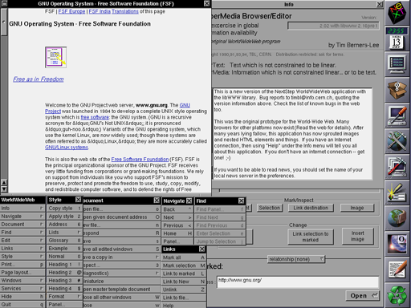
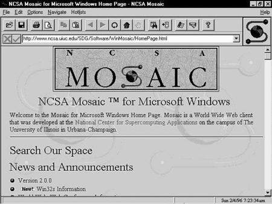

Первый веб-браузер был создан в 1990 году сэром Тимом Бернерс-Ли. Он назывался WorldWideWeb и позже был переименован в Nexus. Но первым распространённым браузером с графическим интерфейсом был NCSA Mosaic. Исходный код этого одного из первых браузеров был открыт, и некоторые другие браузеры (Netscape Navigator и Internet Explorer) взяли его за основу. Этот браузер имел свои недостатки, но почти все они были устранены в браузере Netscape Navigator (некоторые сотрудники компании Netscape были из NCSA и участвовали в разработке Mosaic). Netscape выпустила Netscape Navigator под разные операционные системы (UNIX, Windows, Mac OS) и добилась заметного успеха, в том числе и коммерческого. Это побудило компанию Microsoft выпустить свой браузер Internet Explorer.

В отличие от Netscape, Microsoft сразу выпускала локализованные версии IE. В 1995 году Microsoft выпустила операционную систему Windows 95, в ней не было встроенного браузера, но через некоторое время в обновление системы (Windows 95 OSR2) браузер (Internet Explorer 3.0) был встроен. К тому же Microsoft добавляла в свой браузер несовместимые со стандартами расширения языка HTML, и это можно считать началом войны браузеров, закончившейся монополизацией (более 95 %) рынка браузером от Microsoft.
Из-за потери рынка доходы компании Netscape упали, и её приобрела AOL, а исходный код браузера Netscape был выпущен под свободной лицензией MPL (Mozilla Public License). Название «Mozilla» изначально присутствовало в браузере от Netscape и означало сокращение слов Mosaic+killer. Однако этот код было решено не использовать, и вместо него для Netscape 6 с нуля был написан новый движок (Gecko), изначально ориентировавшийся на полную поддержку стандартов, на основе которого позже были созданы входящие в комплект Mozilla Suite браузер, почтовый и irc-клиент и редактор веб-страниц.
Впоследствии в Mozilla Foundation было принято решение поставлять и развивать браузер отдельно от общего пакета, и родился проект Mozilla Firefox. Firefox содержит много возможностей, отсутствующих в IE или других браузерах, и постепенно набирает популярность.
Монополизация рынка браузером IE имела и другие последствия — Microsoft почти перестала развивать браузер, и он с 4-й до 6-й версии почти не менялся: хуже других браузеров поддерживал стандарты, отставал и по удобству использования, и по скорости работы, и по скорости отображения страниц. Такое положение сподвигло Microsoft вновь заняться браузером, и седьмая версия вышла с некоторыми изменениями (были добавлены вкладки, улучшена поддержка стандартов, поднята скорость работы и более удобный интерфейс). 19 марта 2009 года Microsoft выпустила 8-ю версию Internet Explorer[6], а 14 марта 2011 года 9-ю версию Internet Explorer и активно продвигает её на российском рынке совместно с такими компаниями, как Яндекс, Mail.ru и Рамблер.
В 1995 году появился браузер Opera. Первоначально Opera распространялась как условно-бесплатное ПО (shareware), этим, возможно, объясняется её низкая популярность в большинстве стран мира и высокая популярность в странах СНГ. Однако с 2005 года Opera также стала распространяться бесплатно.
Война браузеров была бы исключительно коммерческим делом корпораций, если бы основным приёмом в борьбе не стало добавление специфических, нестандартных возможностей к браузерам. Наибольшие различия возникали в поддержке JavaScript — языка сценариев, придающего интерактивность документам. В результате многие сайты «оптимизировались» под одни браузеры и плохо работали в других браузерах.
В Internet Explorer 8 Microsoft сначала предлагали ввести HTML-комментарий, который бы указывал браузерам, какие версии движков использовать (заголовок DOCTYPE при этом должен был быть отменён, как малоиспользуемый), что вызвало возмущение сторонников стандартов, так как указания на использование стандартов не предусматривалось. Позже было объявлено, что IE8 будет по умолчанию использовать «режим стандартов» (англ. standards mode), а не «режим совместимости» (англ. quirks mode), а при обнаружении соответствующего комментария использовать режим имитации предыдущей версии.
В 2008 году компания Google решила «помочь» конкуренции на рынке браузеров и выпустила свой браузер — Chrome, основанный на свободном проекте Chromium. Браузер Chrome содержит некоторые новшества (изоляция сбоев, режим «инкогнито» и т. д.). Выпущены версии для Windows XP, Windows Vista, Windows 7, Linux, BSD и Mac OS X.
В начале 2009 года Microsoft объявила, что разрабатывает новый браузер, который будет называться Gazelle. Новый браузер будет применять принципы разделения ресурсов, характерные для многопользовательских операционных систем, что, согласно Microsoft, повысит его безопасность.